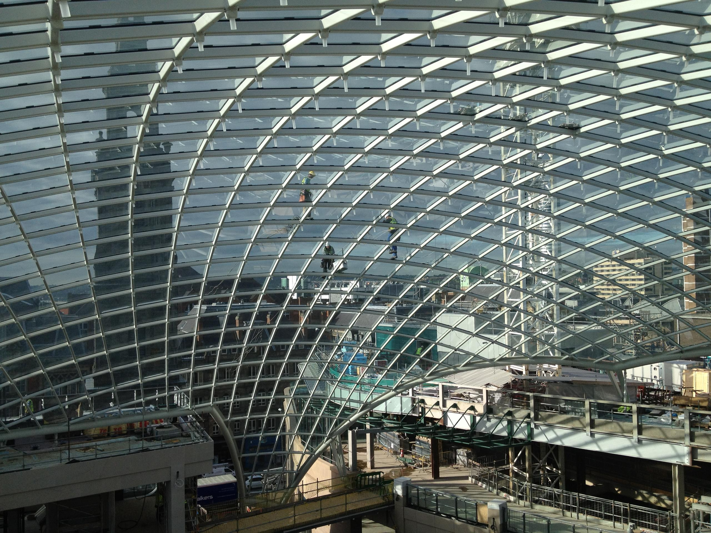
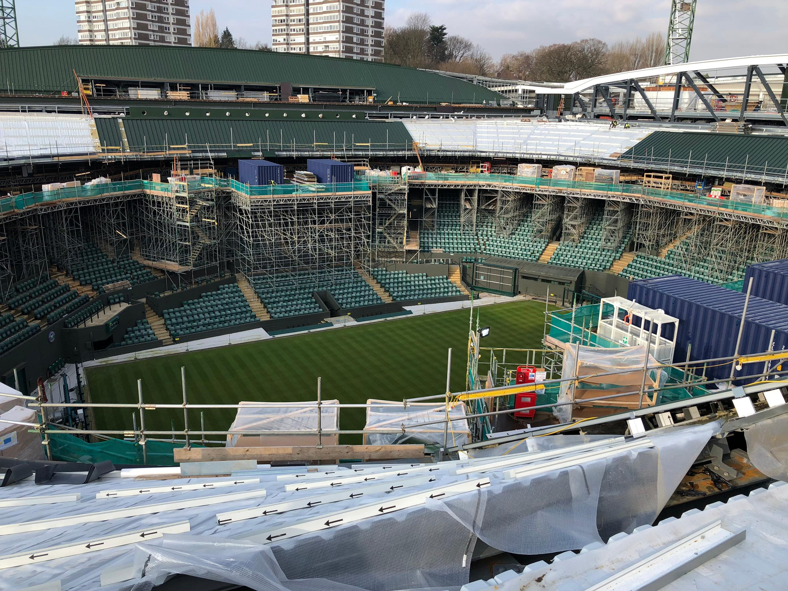

Step 1
Explain the offer fast
Lead with non-destructive testing, material analysis, and welding consultancy in the same plain language already used on the live site.
Engineering Inspection Services are NDT specialists based in North Staffordshire, providing non-destructive testing, material analysis, and welding consultancy throughout the UK and Europe. Quality sits at the heart of the service, with practical inspection support designed to help clients maintain standards and keep work moving.

The current site already says the right things about quality, coverage, and technical support. This version keeps those same themes, but presents them with a stronger page structure and more confidence.
Lead with non-destructive testing, material analysis, and welding consultancy in the same plain language already used on the live site.
Bring standards, coverage, competitive rates, and experienced engineers closer to the top of the page.
Keep direct phone and email links visible, then support them with a form that gathers useful project detail.
The live site says EIS helps clients bring high-quality products to their customers at competitive rates. That is still a strong message, and it works better when it has a dedicated section instead of being buried in the page.
EIS provides non-destructive testing, material analysis, and welding consultancy throughout the UK and Europe, including Birmingham, Manchester, London, Leeds, Glasgow, Cardiff, and beyond.
The strongest ideas on the current site are the commitment to quality, the breadth of service, and the sense that clients are dealing with experienced engineers who understand the practical pressures of real projects.

The new design uses real EIS project imagery so the site feels established rather than generic.
The live site already names the core services clearly. This draft keeps that content, but groups it in a way that is easier to scan and easier to expand later if needed.
Support across all major non-destructive testing techniques for engineering, fabrication, and inspection requirements.
Material verification support where traceability, specification checks, and confidence in the material are essential.
Practical support for projects where welder qualification and welding procedure requirements need careful handling.

All services are presented around the same core promise as the current site: reliable inspection delivered by experienced people.
If a visitor already knows what they need, the site should not make them hunt around. That is why the direct phone number and enquiry call to action stay visible across the site.